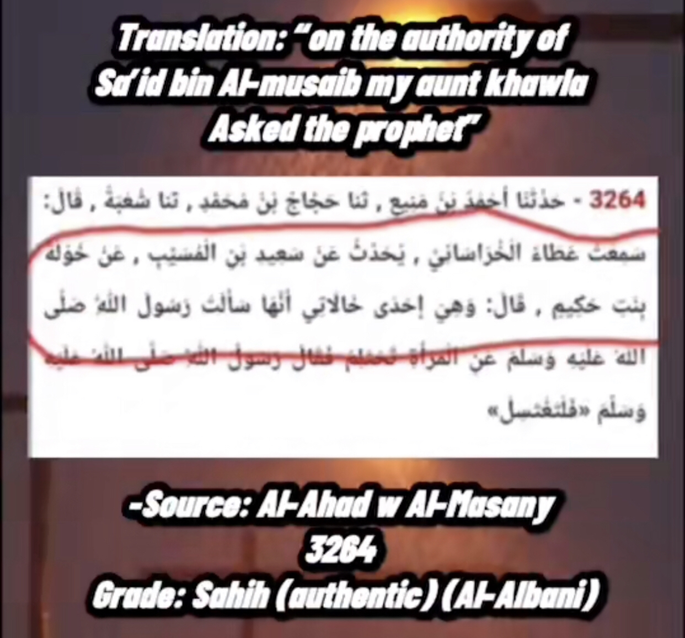
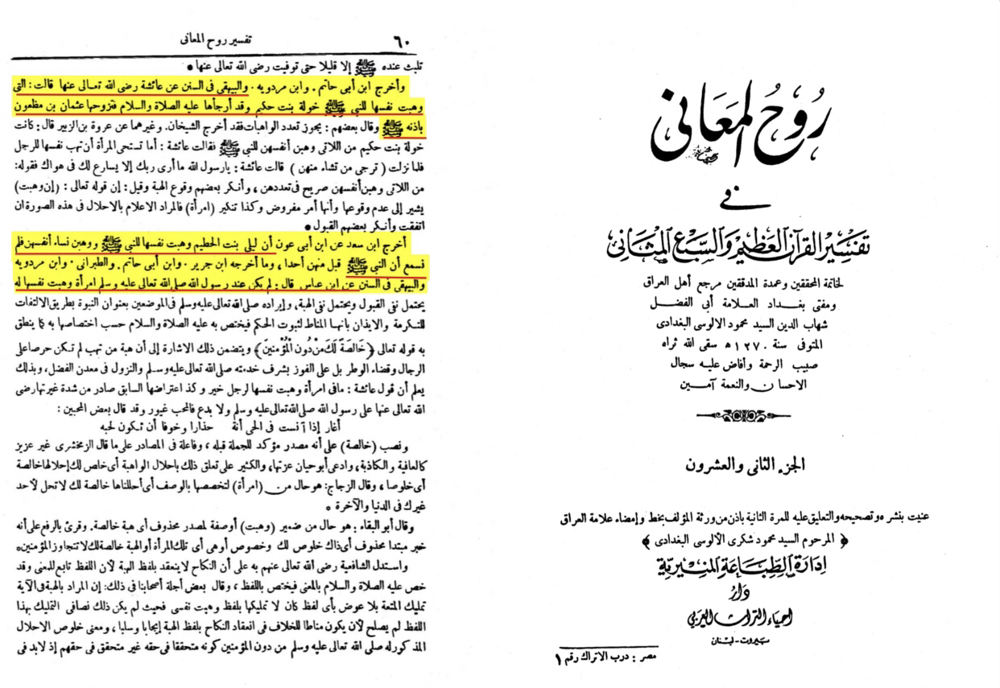
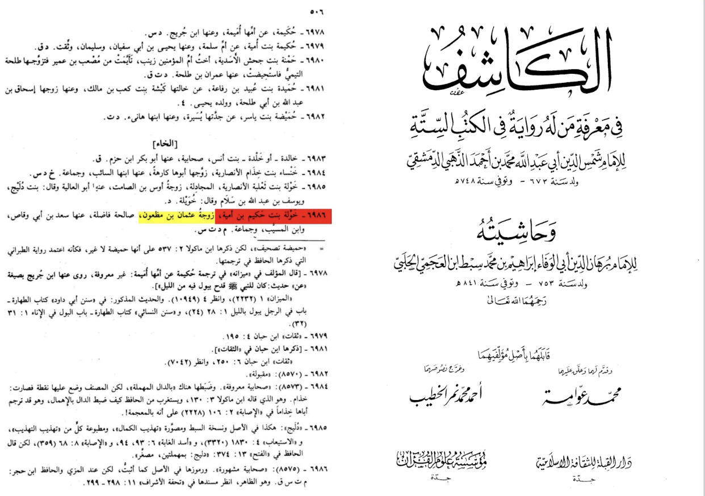

This claim off of the hadith in sahih al-bukhari 5113 khawlah bint hakim was one of the women who gave herself in marriage to the prophet
And in another report in musnad ahmed it says she was his aunt ?
How is that even possible
Basically this is an error from the narrator in musnad ahmed she is the aunt of Sa’id bin musaib not the prophet

In another stronger chain we see she is the aunt of sa’id bin musaib
Now did he really marry her?
No she offered herself to marriage to the prophet but he refused
Tranlation: “Al-bayhaqui and ibn abi hatim produce a narration saying khawlah bint hakim offered herself for marriage to the prophet may peace be upon him so he made her wait so othman bin mat’oun married heral-bayhaqui produced a narration from bin abbas saying the prophet never had any women who offered herself to him (without mehr)”
-Source: Tafsir ruh al-ma’ani volume 22 page number 60

In her transcript in al-kashif it is reported that she is the wife of othman
